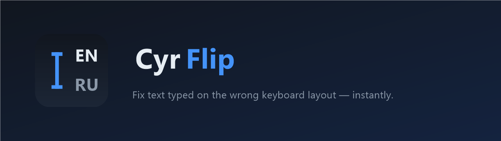
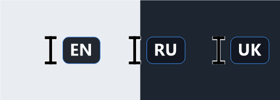

ghbdtn
→ Ctrl+Shift+F12 →
привет
Показує розкладку прямо біля текстового курсора. Під час набору CyrFlip замінює системний текстовий курсор (I-beam) на каретку з маленьким маркером EN / RU / UK, що оновлюється в реальному часі під час зміни розкладки — щоб ви не починали друкувати не в тій.

А якщо все ж промахнулися: виділіть текст, натисніть гарячу клавішу — і CyrFlip транслітерує його на місці між QWERTY та ЙЦУКЕН (EN ↔ RU, UK у планах).
CyrFlip.exe — він сидить у системному треї (без вікна). Значок показує активну розкладку (EN/RU/UK).Правий клік на значку відкриває меню: поточна гаряча клавіша, перемикач Start with Windows (автозапуск) і Exit (вихід). CyrFlip працює у вашому сеансі (це не служба Windows), тому автозапуск — це запис в автозавантаженні користувача.
.exe, нічого не треба встановлювати — працює на «голій» Windows 10/11.Через winget (після публікації):
winget install SerZhyAle.CyrFlipАбо завантажте переносний ZIP зі
сторінки релізів, розпакуйте будь-куди
та запустіть CyrFlip.exe.